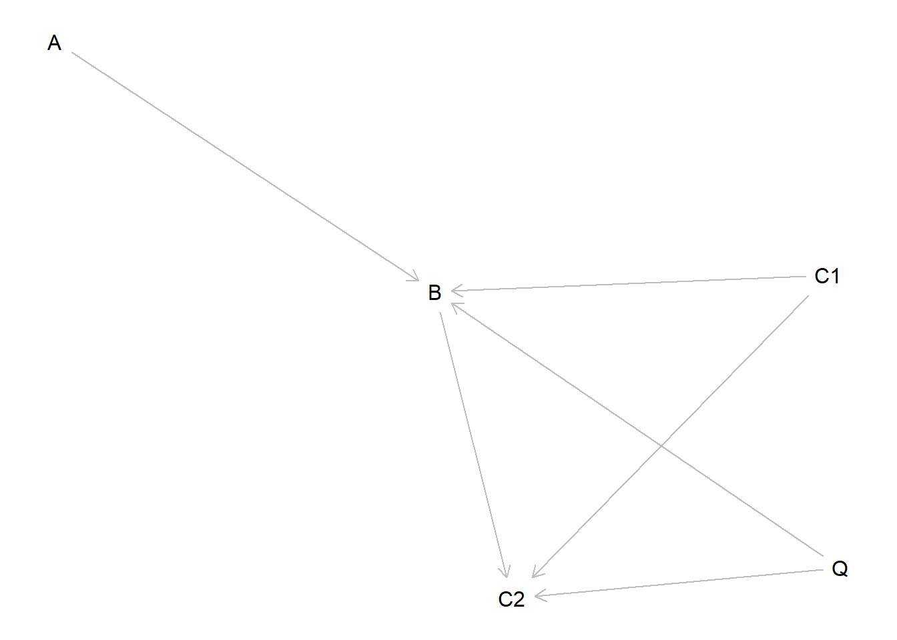

Chapter 14 Justifying models
We outline strategies to reduce reliance on unfounded beliefs about the probative value of clues.
- Keep 14.1, 14.2, 14.5 in chapter.
- Bring in derivation of 4 tests from CQ guide
- Frame most of this as theoretical possibility results
- Create section of Chap 8, on additional kinds of integration, that contains 14.3, portability example * from CQ guide, data fusion
- Drop 14.4 since we have better portability stuff in CQ guide
The approach we have described to inference always involve updating beliefs given data. But to get off the ground researchers need to be able to state priors on all parameters. In many applications the problem of stating priors can be more fundamental than for many Bayesian applications for two reasons. First the beliefs are beliefs over the distribution of individual level effects and not just the beliefs over average effects. This puts us up against the fundamental problem of causal inference (Holland cite, Dawid cite FLAG). Second, the beliefs can do a lot of work—especially in small \(n\) applications. Indeed for the the process tracing described chapters 6 and 7 [FLAG ADD REFS] the inferences are little more than conditional applications of a model.
We see two broad responses to this problem.
One is emphasize the contingent nature of claims. As we outlined in Chapter 4, some causal models might reasonably reflect actual beliefs about the world—for example one might, be convinced that a treatment was randomly assigned, that there is no interference, and that units are independently sampled from a distribution of types. All of these beliefs may be unwise, of course. But if held, then the simple \(X \rightarrow Y\) DAG in chapter 4 (FIGURE REF) is more of a representation of beliefs about the world than it is a model of the world, in the sense of a simplified representation.1 But as we noted in Chapter 4, for an even modestly more complex situation, it seems inevitable that the model being used is unquetionanly a model and hard to think of as a faithful summary of beliefs.
Recognizing in this way that we are generally dealing with models results in a useful reposing of the question: the question becomes not whether the assumptions are correct but whether the model is useful for some purpose (Clarke and Primo 2012). That is the subject of Chapter 15.
Here we focus on more positive steps that might be taken to underpin a model. We highlight first how the type of approach used in Chapters 8 and 9 can be used to justify a process tracing model on the basis of a mixed methods model. These applications presuppose knowledge of a DAG however. In a sense, they simply push the question down a level. There are two further responses to this concern. One is to try to generate the DAG itself from data or a combination of data and theory. We discuss this approach here. Another is to assess the importance of DAG assumptions – which we address in Chapter 15.
14.1 Bounds on probative value
Classic treatments of process tracing make use of Causal Process Observations — observations that are taken to be indicative of a particular causal process in operation. We introduced in Chapter 5 (as well as in FLAG CITE humphreysjacobs) quantities such as \(\phi_{b}\)—the probability that \(K=1\) given \(X\) caused \(Y\) and \(X=Y=1\), or \(\phi_{d}\)—–the probability that \(K=1\) given \(X\) did not cause \(Y\) and \(X=Y=1\).
These accounts do not guide much guidance however regarding where these quantities come from — given that causal types are unobservable how can one justify a belief about the probability of some observation given a causal type. Is it even possible to justify such beliefs?
The grounded approach we described provides an answer to this puzzle. In short, knowledge of the structure of a causal model, together with data on exchangeable units, can be enough to place bounds on possible values of \(\phi_{b}, \phi_{d}\).
We illustrate the basic idea and then review some results in this area.
Imagine a fortunate situation in which (a) it is known that the true causal model has the form \(X \rightarrow M \rightarrow Y\) and (b) we have a lot of experimental data on the conditional distribution of \(M\) given \(X\) and of \(Y\) given \(M\) for exchangeable units (meaning that we can treat our unit of interest as if it were a draw from this set).
Let us define:
- \(\tau_1 = \Pr(M=1 | X=1) - \Pr(M=1 | X=0)\)
- \(\rho_1 = \Pr(M=1 | X=1) - \Pr(M=0 | X=0)\)
- \(\tau_2 = \Pr(Y=1 | M=1) - \Pr(Y=1 | M=0)\)
- \(\rho_2 = \Pr(Y=1 | M=1) - \Pr(Y=0 | M=0)\)
These are all quantities that can be calculated from the data. The \(\tau\)s are average treatment effects and the \(\rho\)s are indicators for how common the \(Y=1\) outcome is.
We are interested in the probability of observing \(M=1\) given \(X=Y=1\):
\[\phi_{b1} = \frac{\lambda_{b}^K\lambda_{b}^Y}{\lambda_{b}^K\lambda_{b}^Y + \lambda_{a}^K\lambda_{a}^Y}\]
Noting that \(\tau_j = \lambda_{b_j} - \lambda_{a_j}\):
\[\phi_{b1} = \frac{\lambda_{b}^K\lambda_{b}^Y}{\lambda_{b}^K\lambda_{b}^Y + (\lambda_{b}^K-\tau_1)(\lambda_{b}^Y - \tau_2)}\] which we can see is decreasing in \(\lambda_{b}^j\) (this may seem counterintuitive, but the reason is that with \(\tau^j\) fixed, lower \(\lambda_{b}^j\) also means lower \(\lambda_{a}^j\) which means less ambiguity about how \(X\) affects \(Y\) (i.e. through positive or negative effects on \(K\)).
The lowest permissible value of \(\lambda_{b_j}\) is \(\tau_j\), yielding \(\phi_{b1} = 1\).
The highest value obtainable by \(\lambda_{b_j}\) is when \(\lambda_{a_j} = \frac{1-\tau_j+\rho_j}2\) and so \(\lambda_{b_j} = \frac{1+\tau_j+\rho_j}2\).
In this case: \[\phi_{b1} = \frac{(1+\tau_1+\rho_1)(1+\tau_2+\rho_2)}{(1+\tau_1+\rho_1)(1+\tau_2+\rho_2) + (1-\tau_1+\rho_1)(1-\tau_2+\rho_2)}= \frac{(1+\tau_1+\rho_1)(1+\tau_2+\rho_2)}{2(1+\rho_1)(1+\rho_2) + 2\tau_1\tau}\]
And so:
\[\frac{(1+\tau_1+\rho_1)(1+\tau_2+\rho_2)}{2(1+\rho_1)(1+\rho_2) + 2\tau_1\tau_2} \leq \phi_{b1} \leq 1\]
These are the bounds on \(\phi_{b1}\). We can calculate bounds on \(\phi_{d1}\) in a similar way (though of course the bounds on \(\phi_{b1}\) and \(\phi_{d1}\) are not independent).
\[\phi_{d1} = \frac{\lambda_{b}^K\lambda_{d}^Y}{(\lambda_{a}^K + \lambda_{b}^K + \lambda_{c}^K)\lambda_{d}^Y+ \lambda_{c}^K\lambda_{a}^Y}\]
Figure ?? illustrates how “smoking gun” and “hoop” tests might each be justified with knowledge of \(\tau_j, \rho_j\).
For the smoking gun, \(\phi_{b1}\) is .5 because \(\lambda_a^j = \lambda_b^j\) so half of the upper level \(b\) types work through a positive effect on \(M\) and half through a negative effect on \(M\). \(\phi_{d1}\), on the other hand, is low here \(d\) types mostly arise because of \(c\) types in the first step and \(a\) types in the second, and hence most commonly with \(M=1\).
Whether the bounds map into useful probative value depends in part on whether causal effects are better identified in the first or the second stage. We can see this in Figure 14.1.
The key difference between the panels is that \(\phi_d\) is constrained to be low in the first panel but not in the second.
For intuition note that a higher level \(d\) type will exhibit \(M=1\) if it is formed via \(db\), \(bd\),or \(dd\) and it will exhibit \(M=0\) if it is formed via \(ca\), \(cd\), \(ad\). The weak second stage makes it possible that there are no second stage d types, only a and b types. The stronger first stage makes it possible that there are no first stage \(c\) types. In that case the higher level d types are formed uniquely of \(db\) types – which always exhibit \(M=1\) if \(X=1\).
This is not possible however for the data assume in the first panel. In the first panel the the higher value on \(\rho_2\) means that there must be at least .25 d types. And the weak first stage means that there must at least .5 a and c types combined. Thus there must be a set of cases in which \(M\) is not observed even though we have an upper level d type.
Figure 14.1: Probative value with different first and second stage relations
In short we emphasize that difficult as it might seem at first it is possible to put relatively tight bounds on probative value for causal types with access to experimental data on exchangeable units.
14.2 The possibility of identification of probative value from experimental data
While it is possible to calculate bounds on probative value, it can be simpler to calculate bounds on estimands directly. These bounds can be justified with reference to background data in the same ways as the bounds on probative value.
Following Dawid, Humphreys, and Musio (2019) we again imagine we had access to infinite experimental data on the effect of \(X\) on \(Y\) and we want to know for a case (exchangeable with any other in this population) with \(X=Y=1\), whether \(X=1\) caused \(Y=1\). Call this the “probability of causation.”
Say we knew the marginal distributions:
- \(\Pr(Y=1|X=1) = .75\)
- \(\Pr(Y=1|X=0) = .25\)
The we could represent this knowledge as Markovian transition matrix from \(X\) to \(Y\) like this:
\[P=\left( \begin{array}{cc} 0.50 & 0.50 \\ 0.25 & 0.75 \end{array}\right)\]
In this case, from results in Dawid, Musio, and Murtas (2017), we can place bounds directly on the probability that \(X\) caused \(Y\), viz:
\[\frac13 \leq PC \leq \frac23 \] For intuition note that \(P\) implies a causal effect of .25 and so the lowest value of \(\lambda_b\) consistent with \(P\) arises when \(\lambda_b = .25\) and \(\lambda_a = 0\), in which case \(\lambda_c = .25\) and \(\lambda_d = .5\). In this case \(\lambda_b/(\lambda_b+ \lambda_d)=\frac{1}{3}\). The highest consistent value of \(\lambda_b\) arises when \(\lambda_b = .5\) and \(\lambda_a = .25\), in which case \(\lambda_c = 0\) and \(\lambda_d = .25\). In this case \(\lambda_b/(\lambda_b+ \lambda_d)=\frac{2}{3}\).
Defining \(\tau\) and \(\rho\) as before, the more general formula for the case with \(\rho>0\) is:
\[\frac{2\tau}{1+\tau+\rho} \leq PC \leq \frac{1+\tau-|\rho|}{1+\tau+\rho} \]
Say now we have access to auxiliary data \(K\) and plan to make inferences based on \(K\).
We will suppose first that \(K\) is a mediator, as above, and second that \(K\) is a moderator.
14.2.1 Mediator
Say now that in addition we know from experimental data, that \(K\) mediates the relationship between \(X\) and \(Y\); indeed we will assume that we have a case of complete mediation, such that, conditional on \(K\), \(Y\) does not depend on \(X\).
Say the transition matrices from \(X\) to \(K\) and \(K\) to \(Y\) are:
\[P^{xk}=\left( \begin{array}{cc} 1 & 0 \\ 1/2 & 1/2\end{array}\right), P^{ky}=\left( \begin{array}{cc} 1/2 & 1/2 \\ 0 & 1\end{array}\right)\] Even without observing \(K\), this information is sufficient to place a prior on PC of \(p=\frac13\).
To see this, note that we can calculate:
- \(\lambda_a^K =0\), \(\lambda_b^K = \frac{1}{2}\), \(\lambda_c^K = \frac{1}{2}\), \(\lambda_d^K = 0\)
- \(\lambda_a^Y =0\), \(\lambda_b^Y=\frac{1}{2}\), \(\lambda_c^Y=0\), \(\lambda_d^Y=\frac{1}{2}\)
and so:
- \(\lambda_b^u = \lambda_b^K\lambda_b^Y = \frac{1}4\)
- \(\lambda_d^u = \lambda_d^Y\)
- \(p = \frac{\lambda_b^u}{\lambda_b^u + \lambda_d^u} = \frac{1}3\).
whence:
- \(\phi_{b1} = 1\)
- \(\phi_{d1} = \lambda_d^K + \lambda_b^K = \frac{1}{2}\)
More generally we can calculate the lower bound on the probability that \(X\) caused \(Y\) as the product of the lower bounds that \(X\) caused \(M\) and that \(M\) caused \(Y\), and similarly for the upper bound, using the same formula as before. Signing things so that \(\tau^j\geq 0\), \(j \in {1,2}\):
\[\frac{2\tau_1}{1+\tau_1+\rho_1}\frac{2\tau_2}{1+\tau_2+\rho_2} \leq PC \leq \frac{1+\tau_1-|\rho_1|}{1+\tau_1+\rho_1}\frac{1+\tau_2-|\rho_2|}{1+\tau_2+\rho_2} \]
We have undertaken essentially the same operations as above except that now we are placing bounds on a substantive estimand of interest rather than first placing bounds on probative value of a clue and then turning to Bayes rule to place bounds on the estimand.
14.2.2 Moderator
Consider now a situation in which our case is drawn from a set of cases for which \(X\) and \(K\) were each randomly assigned. Say then that the transition matrices, conditional on \(K\) look as follows:
\[P^{K=0}=\left( \begin{array}{cc} 0 & 1 \\ 0.5 & 0.5 \end{array}\right), P^{K=1}=\left( \begin{array}{cc} 1 & 0 \\ 0 & 1 \end{array}\right)\] In this case we can now identify PC, even before observing \(K\). If \(K=0\), PC is 0—there are no cases with positive effects in this condition. If \(K=1\) PC = 1. We have a prior that \(K=1\) of .5 and after observing \(X=Y=1\) we raise this to \(2/3\). Thus our prior belief on \(PC\) — before seeing \(K\)— is \(2/3 * 1 + 1/3 * 0 = 2/3\).
How about \(\phi_{b1}\) and \(\phi_{d1}\)?
Here positive effects only arise when \(K=1\) and so \(\phi_{b1} = 1\). \(Y=1\) without being cause by \(X\) only if \(K=0\) and so \(\phi_{b0} = 0\). Thus we have a double decisive clue.
14.2.3 Case level bounds from mixed data
14.3 Learning across populations
Now consider strategies to learn about clues from observing patterns in different populations.
We first consider a situation in which we believe the same model holds in multiple sites but in which learning about the model requires combining data about different parts of the model from multiple studies.
We imagine we have access to three types of data;
- Study 1 is an experiment looking at the effects of \(X\) on \(Y\), ancillary data on \(K\) is collected but \(Z\) is not observed
- Study 2 is a factorial study examining the joint effects of \(X\) and \(Z\) on \(Y\), \(K\) is not observed
- Study 3 is an RCT looking at the relation between \(Z\) and \(K\). \(X\) and \(Y\) are not observed.
Tables 14.1 - 14.3 show conditional inferences for the probability that \(X\) caused \(Y\) in \(X=Y=1\) cases conditional on \(K\) for each study, analyzed individually
| Subset | mean | sd |
|---|---|---|
| X == 1 & Y == 1 & K == 1 | 0.5 | 0.153 |
| X == 1 & Y == 1 & K == 0 | 0.5 | 0.146 |
| Subset | mean | sd |
|---|---|---|
| X == 1 & Y == 1 & K == 1 | 0.546 | 0.110 |
| X == 1 & Y == 1 & K == 0 | 0.546 | 0.112 |
| Subset | mean | sd |
|---|---|---|
| X == 1 & Y == 1 & K == 1 | 0.5 | 0.154 |
| X == 1 & Y == 1 & K == 0 | 0.5 | 0.152 |
In no case is \(K\) informative. In study 1 data on \(K\) is not available, in study 2 it is available but researchers do not know, quantitatively, how it relates to \(Z\). In the third study the \(Z,K\) relationship is well understood but the joint relation between \(Z,X\), and \(Y\) is not understood.
Table 14.4 shows the inferences when the data are combined with joint updating across all parameters.
| Subset | mean | sd |
|---|---|---|
| X == 1 & Y == 1 & K == 1 | 0.663 | 0.081 |
| X == 1 & Y == 1 & K == 0 | 0.519 | 0.099 |
| X == 1 & Y == 1 & K == 1 & Z == 1 | 0.713 | 0.101 |
| X == 1 & Y == 1 & K == 0 & Z == 1 | 0.713 | 0.101 |
| X == 1 & Y == 1 & K == 1 & Z == 0 | 0.509 | 0.104 |
| X == 1 & Y == 1 & K == 0 & Z == 0 | 0.509 | 0.104 |
Here fuller understanding of the model lets researchers use information on \(Z\) to update on values for \(Z\) and in turn update on the likely effects of \(X\) on \(Y\). Rows 3-6 highlight that the updating works through inferences on \(Z\) and there are no gains when \(Z\) is known, as in Study 2.
In this example Studies 2 and 3 can be thought of as helper experiments for Study 1. Study 2 might be thought of as a mechnism study whereas Study 3 is more like a measurement study.
14.4 Different models for different sites
In the last example we assumed that the same model operated in the same wayat all sites. This is a strong assumption, though sometimes justifiable (for instance if sites were randomly allocated across studies).
If the same model does not operate at different sites it might still be possible to update in this way. For this, however, we need to be able to specify how sites differ Consider a problem where the models partially differ across sites: for instance we believe that although treatment effects are different in two sites yet the mechanisms linking treatment to outcomes are the same. As a simple example we might imagine that \(X\) is differentially likely to produce \(M\) in two sites, but if it does the relation between \(M\) and \(Y\) is common across sites.
# In this model you are more likely to have an M=1 type regardless if Y = 1 regardless
# This produces a positive confound
model_1 <- make_model("X->M->Y") %>%
set_confound(confound = list(M = "(Y[M=1] ==1) & (Y[M=0]==1)")) %>%
set_parameters(c(.1, 0, .2, .7,
.5, .5,
.7, 0, .2, .1,
.2, .2, .4, .2))
plot(model_1)if(do_diagnosis){
df_1 <- simulate_data(model_1, n = 20000, using = "parameters")
posterior_1 <- CausalQueries(model_1, df_1, stan_model = fit)
# In this model you are more likely to have an M=1 regardless if Y = 1 regardless
# This produces a negative confound
model_2 <- make_model("X->M->Y") %>%
set_confound(confound = list(M = "(Y[M=1] ==1) & (Y[M=0]==1)")) %>%
set_parameters(c(.7, .1, .2, 0,
.5, .5,
0, .1, .2, .7,
.2, .2, .4, .2))
df_2 <- simulate_data(model_2, n = 20000, using = "parameters")
posterior_2 <- CausalQueries(model_2, df_2, stan_model = fit)
out1 <- query_model(posterior_1, using="posteriors", queries = list(`X on M` = "M[X=1] - M[X=0]", `M on Y` = "Y[M=1] - Y[M=0]"))
out2 <- query_model(posterior_2, using="posteriors", queries = list(`X on M` = "M[X=1] - M[X=0]", `M on Y` = "Y[M=1] - Y[M=0]"))
write_rds(list(posterior_1, posterior_2, out1, out2), "saved/same_mechanism.rds")
}
same_mechanism <- read_rds("saved/same_mechanism.rds")
kable(same_mechanism[[3]])| Query | Subset | Using | mean | sd |
|---|---|---|---|---|
| X on M | All | posteriors | 0.204 | 0.006 |
| M on Y | All | posteriors | 0.239 | 0.027 |
| Query | Subset | Using | mean | sd |
|---|---|---|---|---|
| X on M | All | posteriors | 0.099 | 0.006 |
| M on Y | All | posteriors | 0.189 | 0.068 |
# The marginal effect of X on M will be different in the two cases
# The effect of M on Y is the same however, though it is confoundedUnder the model there is possibly a difference in the effect of \(X\) on \(Y\) in the
14.4.1 Observational and experimental
Let us imagine a second case in which one wants to update based on
14.5 Causal discovery
We start with a model with three variables, \(X,M,Y\) where \(X\) affects \(Y\) directly and indirectly through \(M\). We simulate data from this model – assuming monotonicity but otherwise a flat distribution on types, and then try to recover the structure from this model.
In this case the data structure did not impose restrictions on the skeleton. The true graph can however be recovered with knowledge of the temporal ordering of variables.
Next we consider the model in which X causes Y through M but not directly. In this case we have a restriction — specifically there is no arrow pointing directly from \(X\) to \(Y\). Again we impose monotonicity, draw data, and try to recover the model:
Again we have the correct skeleton and knowledge of timing is enough to recover the graph.
Finally we consider the model in which \(Y\) has two causes that do not influence each other. Again we impose monotonicity, draw data, and try to recover the model:
14.5.1 A model of models
In the following mode there is an unknown, \(Q\), which determines the relevant causal model. If \(Q=1\) then we have \(A \rightarrow B \rightarrow C2\); if \(Q=0\) then \(A \rightarrow B \leftarrow C1\). In this case the temporal order of \(C1\) and \(C2\) is observable, so there is not confusion there; what is not clear however is which is the important node to include in the model.
model <- make_model("A -> B -> C2 <- C1 -> B <- Q -> C2") %>%
# These restrictions capture the role of Q in turning parentage on or off
set_restrictions(c(
"(B[C1=1, Q=1] != B[C1=0, Q=1])",
"(C2[B=1, Q=0] != C2[B=0, Q=0])")) %>%
# These restrictions are for simplification: monotonicity and complementarity
set_restrictions(c(
"(C2[B=1] < C2[B=0])",
"(C2[C1=1] < C2[C1=0])",
"(B[A=1] < B[A=0])",
"(B[C1=1] < B[C1=0])",
"((B[A=1, C1=1] - B[A=0, C1=1]) < (B[A=1, C1=0] - B[A=0, C1=0]))"))
model##
## Statement:
## [1] "A -> B -> C2 <- C1 -> B <- Q -> C2"
##
## DAG:
## parent children
## 1 A B
## 3 C1 B
## 4 C1 C2
## 5 Q B
## 6 Q C2
## 2 B C2
##
## ------------------------------------------------------------------------------------------
##
## Nodal types:
## $A
## 0 1
##
## node position display interpretation
## 1 A NA A0 A = 0
## 2 A NA A1 A = 1
##
## $C1
## 0 1
##
## node position display interpretation
## 1 C1 NA C10 C1 = 0
## 2 C1 NA C11 C1 = 1
##
## $Q
## 0 1
##
## node position display interpretation
## 1 Q NA Q0 Q = 0
## 2 Q NA Q1 Q = 1
##
## $B
## 00000000 10000000 01000000 11000000 00100000 10100000 01100000 11100000 00010000 10010000 01010000 11010000 00110000 10110000 01110000 11110000240 nodal types omitted
##
## node position display interpretation
## 1 B 1 B[*]******* B | A = 0 & C1 = 0 & Q = 0
## 2 B 2 B*[*]****** B | A = 1 & C1 = 0 & Q = 0
## 3 B 3 B**[*]***** B | A = 0 & C1 = 1 & Q = 0
## 4 B 4 B***[*]**** B | A = 1 & C1 = 1 & Q = 0
## 5 B 5 B****[*]*** B | A = 0 & C1 = 0 & Q = 1
## 6 B 6 B*****[*]** B | A = 1 & C1 = 0 & Q = 1
## 7 B 7 B******[*]* B | A = 0 & C1 = 1 & Q = 1
## 8 B 8 B*******[*] B | A = 1 & C1 = 1 & Q = 1
##
## $C2
## 00000000 10000000 01000000 11000000 00100000 10100000 01100000 11100000 00010000 10010000 01010000 11010000 00110000 10110000 01110000 11110000240 nodal types omitted
##
## node position display interpretation
## 1 C2 1 C2[*]******* C2 | C1 = 0 & Q = 0 & B = 0
## 2 C2 2 C2*[*]****** C2 | C1 = 1 & Q = 0 & B = 0
## 3 C2 3 C2**[*]***** C2 | C1 = 0 & Q = 1 & B = 0
## 4 C2 4 C2***[*]**** C2 | C1 = 1 & Q = 1 & B = 0
## 5 C2 5 C2****[*]*** C2 | C1 = 0 & Q = 0 & B = 1
## 6 C2 6 C2*****[*]** C2 | C1 = 1 & Q = 0 & B = 1
## 7 C2 7 C2******[*]* C2 | C1 = 0 & Q = 1 & B = 1
## 8 C2 8 C2*******[*] C2 | C1 = 1 & Q = 1 & B = 1
##
##
## Number of types by node
## A C1 Q B C2
## 2 2 2 256 256
##
## Number of unit types: 524288
##
## ------------------------------------------------------------------------------------------
##
## Restrictions:
## A: 0 restricted types
## C1: 0 restricted types
## Q: 0 restricted types
## B: 0 restricted types
## C2: 0 restricted types
if(do_diagnosis){
model_Q0 <- set_parameters(model, node = "Q", alphas = c(1,0))
model_Q1 <- set_parameters(model, node = "Q", alphas = c(0,1))
data_0 <- make_data(model_Q0, 100, vars = c("A", "B", "C1", "C2"))
data_1 <- make_data(model_Q1, 100, vars = c("A", "B", "C1", "C2"))
model_Q0 <- update_model(model, data_0)
model_Q1 <- update_model(model, data_1)
Qu0 <- query_model(model_Q0, "Q==1", using = "posteriors")
Qu1 <- query_model(model_Q1, "Q==1", using = "posteriors")
write_rds(list(model_Q0, model_Q1, Qu0, Qu1), "saved/ch14_Qornot.rds")
}
Qornot <- read_rds("saved/ch14_Qornot.rds")
kable(Qornot[[3]])| Query | Given | Using | mean | sd |
|---|---|---|---|---|
| Q 1 | - | posteriors | 0.265 | 0.176 |
| Query | Given | Using | mean | sd |
|---|---|---|---|---|
| Q 1 | - | posteriors | 0.579 | 0.18 |
[Ideally here however \(\lambda^Q\) is either 0 or 1 — we want to know which world we are in]
References
Clarke, Kevin A, and David M Primo. 2012. A Model Discipline: Political Science and the Logic of Representations. New York: Oxford University Press.
Dawid, A Philip, Monica Musio, and Rossella Murtas. 2017. “The Probability of Causation.” Law, Probability and Risk 16 (4): 163–79.
Dawid, Philip, Macartan Humphreys, and Monica Musio. 2019. “Bounding Causes of Effects with Mediators.” arXiv Preprint arXiv:1907.00399.
Even in this simple case there are ways in which the representation is a model, not least the coding of events as a variable invovlves a form of modelling.↩